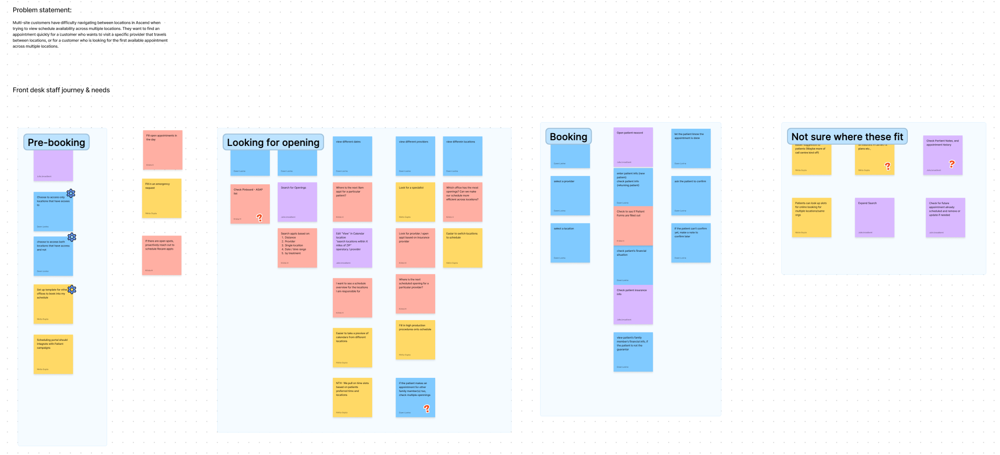
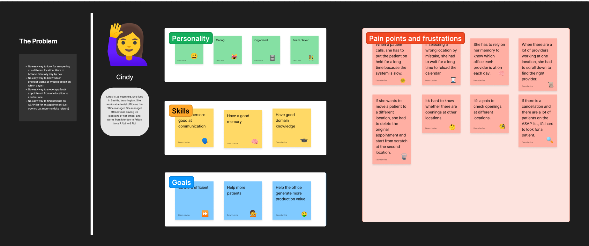
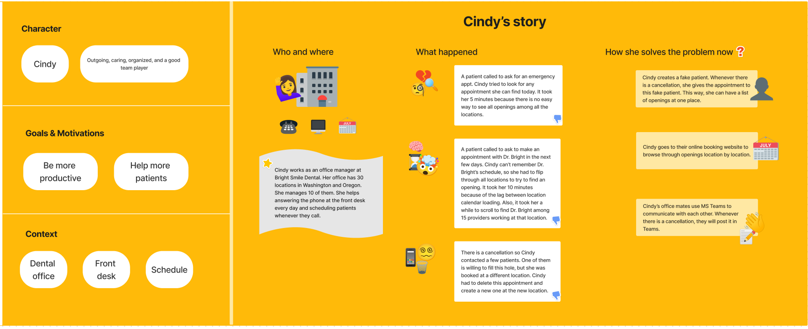
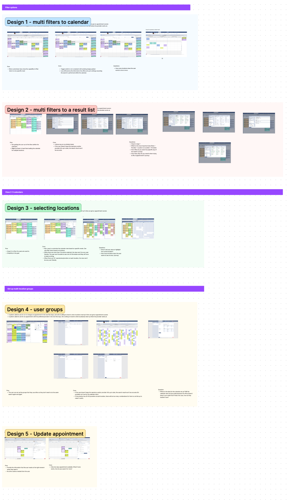
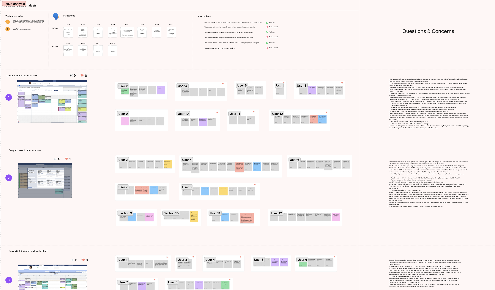

SaaS Product Scheduling for Multiple Locations
 Duration: 8 weeks
Duration: 8 weeks
 Tools: Usertesting.com, FigJam, Figma
Tools: Usertesting.com, FigJam, Figma
 My Roles: User Research, Design, Prototyping
My Roles: User Research, Design, Prototyping
Our software was initially created primarily for private dental offices. In recent years, the dental industry has seen a rapid increase in multi-location offices and private practices joining larger DSOs for administrative support. Unlike solo practices, these users often share patients across multiple locations to better serve their busy schedules, creating scheduling challenges. Consequently, we've received numerous complaints about our scheduling calendar's lack of user-friendliness. Users struggle to view multiple schedules simultaneously, resulting in delays and patient inconveniences."
In the design discovery phase, our team, consisting of two product managers and two UX designers, with me leading the design efforts, initiated the project with a series of brainstorming sessions in FigJam. Our aim was to gain a comprehensive understanding of the problem we were addressing. During these sessions, we organized schedule-related tasks into four distinct categories. This categorization provided valuable insights into the user's daily routines and highlighted essential questions that needed answers for effective problem-solving. Now, we are ready to move forward with user research.

As the design lead, I created a thorough user interview script tailored to uncover the specific pain points our users were facing. Following this, I contacted approximately 80 users via email, inviting them to engage in 30-minute conversations to delve deeper into their experiences. This approach led to insightful discussions with five users, each representing offices of different sizes. These interactions gave us a valuable opportunity to explore potential distinctions in pain points between users from smaller practices and larger DSOs.
The interview sessions were highly productive, yielding a wealth of valuable insights. Upon careful review of the interview videos and meticulous note-taking, I noticed some common pain points and usage patterns, irrespective of the user's office size.
- All users found switching between locations to be a painful experience, primarily due to performance issues and noticeable lag. This was clearly not a design problem but a pressing issue that required immediate attention.
- Currently, all users manually navigate through the calendar whenever they need to find an available time slot.
- Moving a patient from one location to another was also a source of frustration, as it required deleting the original appointment and creating a new one from scratch at the new location.
- When inquired about their awareness of the "Search Openings" feature, all users confirmed they were aware of its existence and had attempted to use it at some point. However, only one user expressed a willingness to give the feature another try if it were improved. The remaining four users preferred using the calendar view and were indifferent to the search function, even if it were significantly enhanced.
The team was surprised to discover that users were not crazy about the search function, despite its expected time-saving advantages. As a result, we decided to reevaluate our approach and prioritize enhancing the calendar view, which, later, we found, had shown unanimous popularity among all users.
Based on the insights collected during user research, I developed a persona to offer the team a more profound insight into the user's existing hurdles and needs. I also constructed a narrative for our persona using feedback from my notes, providing a cohesive story that allowed all team members to swiftly grasp the problem we aimed to resolve, the target audience, and the key issues that demanded attention. In the future, this user story can also serve as a means to validate any solutions we craft during the design phase.


Based on insights from our user research, we found that our users held the calendar view in high regard. They appreciated its visual nature and its ability to accurately display data. Additionally, it offered an efficient way to onboard new employees. However, presenting schedules from all locations on a single screen posed challenges, especially for larger practices with numerous providers. In some locations, there were over 10 providers, making it impractical to cram all the data into a single screen and causing excessive scrolling, which hindered productivity. As the lead designer, I collaborated with a colleague to generate five distinct design concepts, each approaching the problem from a different angle.

Despite all five designs being developed based on user research data, it remained unclear which design best aligned with users' needs. In order to gain greater clarity, we decided to conduct a round of concept testing. To ensure the success of the testing process, I formulated a comprehensive test plan outlining the testing objectives, hypotheses to be assessed, detailed testing scripts for each design concept, and the methodology for measuring test results. With the support of the product managers, we successfully recruited 12 participants, including eight end-users and four customer success managers. Over a span of two weeks, we accumulated a substantial amount of data through the testing sessions. After reviewing the testing videos and taking detailed notes, I compiled an in-depth result analysis report. This report covered the testing scenarios, participant profiles, the assumptions tested for each design concept, and an evaluation of what aspects of each design were effective and what aspects were not.

Following the completion of our concept testing sessions, we identified two designs that stood out with the most positive feedback: Design 1 and Design 3. However, upon a more in-depth examination of the rationale behind the participants' preferences, it became clear that Design 3 had been chosen primarily because it aligned with the existing customer experience, offering no additional advantages beyond familiarity.
Conversely, Design 1 not only retained the same advantages as Design 3 but also presented users with a significantly more versatile solution, capable of addressing a wide range of scenarios within their workflow. This versatility elevated Design 1 to the preferred choice, as it introduced substantial value to the user experience beyond what was already available.
Through a thorough examination of our concept testing results, we successfully identified the most effective design choice for our product. This outcome emphasized the importance of not just collecting user feedback, but also of conducting comprehensive analysis to make informed decisions that deliver the utmost value to our users.